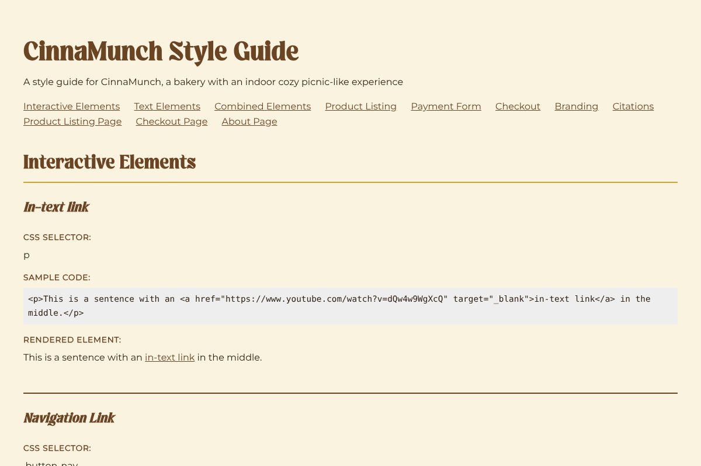
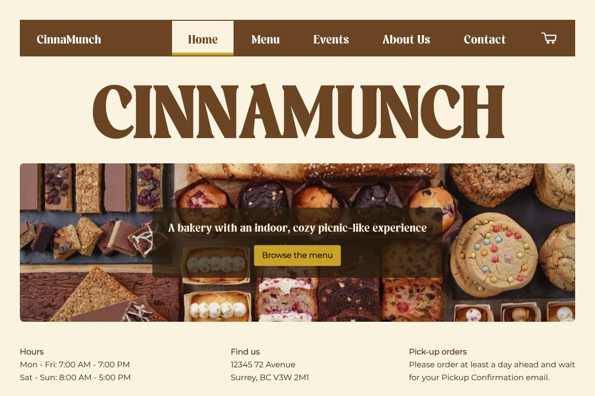
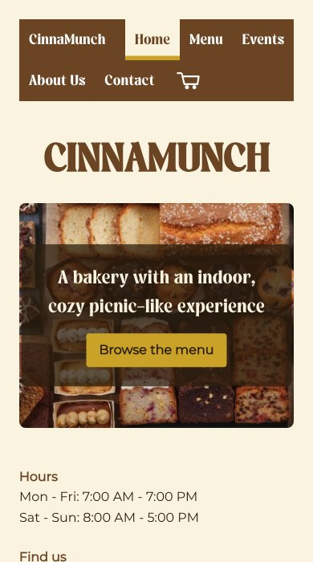
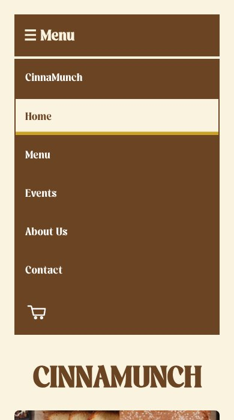

Web design · Process analysis
CinnaMunch: one style guide, eleven pages, every screen size
A bakery website built as a team, from separate style guides to a tested, responsive site.
Process analysis
-
Problem
CinnaMunch is a bakery website built for a team project in IAT 339. The challenge was a set of pages that feel like one brand and work on any screen, from a phone to a desktop.
-
Foundation
We started with individual style guides and merged them into one shared guide: Mileast headings, Montserrat body text and a brown-and-gold palette. Every page pulls from that guide, so a decision made once, such as a button style, applies everywhere.
-
Iteration
Feedback drove the biggest changes. Peers asked for a corrected citation, product text beside the image, and real photos instead of placeholders. Our instructor asked for a GitHub link in the footer, and visible active link, so we added a highlight using aria-current, which screen readers also announce, plus breadcrumbs. When the navigation collapsed awkwardly on small screens, we replaced it with a hamburger menu built from a hidden checkbox and CSS, because JavaScript was out of scope for the project. The first homepage was really the style guide, so we split them into two pages.
-
Testing
We tested at phone, tablet and desktop widths. That found a three-pixel sideways scroll on checkout and buttons with no gap between them, and both were fixed. A validator pass caught skipped heading levels, which we corrected without changing how the pages look.
-
Reflection
The finished site has eleven pages, a style guide that documents every component with its atomic-design level, and a citations page. The main lesson was that a style guide only works if every page is checked against it, and that testing at real screen sizes finds problems a design file never shows.
Artifacts



